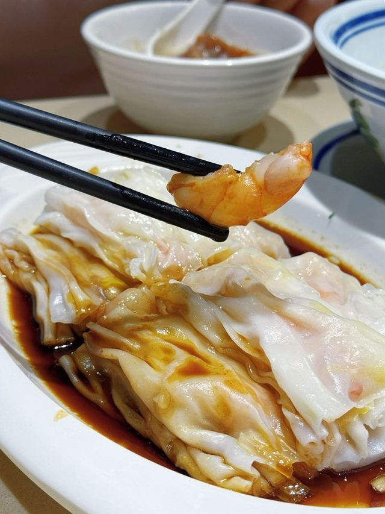

NeXT Barbershop (two shops: Shaanxi Nan Road and Ruijin 2nd Road) NeXTBarbershop男士理发馆(陕西南路店) and Next BARBERSHOP男士理发馆(瑞金二路店)
Modern men's barbershop · Huangpu
LikelyFew reviews · 15 Nov 2026It does fades and beard trims (from CNY 158) at two shops with separate map pins; phone first.
Few reviews
The evidence for this one has a gap. Check on the day or call ahead.
Why go
SmartShanghai (editor update 24 Jan 2026) says the shop was founded in 2023 and names four barbers: Da Shan (15 years' experience; American gradient, taper and skin fades, mullet, beard), Vison (14 years; styles matched to face shape), Kylo, and Vic (barber since 2018). It lists straight-razor shaves (no price given) and beard trims from CNY 158, and a CNY 288 haircut with Vison. Amap reviewers praise the technique and the clean shop at the Ruijin Er Lu shop (29 Sep and 9 Oct 2025) and say the Shaanxi Nan Lu shop focuses on cutting and shaving and teaches how to style (4 Mar 2026). The samples are tiny, so treat it as promising rather than proven.
Independent or chain
Two shops: 陕西南路店 (the original; moved in 2026 from inside the lane at 陕西南路186弄 to a street frontage; Amap prints 陕西南路19号) and 瑞金二路店 at 瑞金二路65号. Amap shows exactly two shops under this name.
How to get there
Have your hotel front desk or a Chinese-speaking friend phone first to confirm which shop, the hours and which barber is in. Shaanxi Nan Lu shop: 15821009727 or 17717517903 (Amap). Ruijin Er Lu shop: 18315340550 (Amap and SmartShanghai). SmartShanghai lists WeChat, SMS or phone contact. No online booking was found, and walking in is likely fine on a weekday but was not verified. Show the driver the Amap pin of the shop the phone call confirms: 陕西南路19号 NeXTBarbershop男士理发馆(陕西南路店), or 瑞金二路65号 Next BARBERSHOP男士理发馆(瑞金二路店).
Local tip
The Shaanxi Nan Lu shop is the one with reviews from 2026. The Ruijin Er Lu shop is nearer Xintiandi, but its newest review is from Oct 2025. Ask which barber works at which shop, because that was not established.
About the ratings
Amap 4.5 (5 ratings) for the Shaanxi Nan Lu shop and Amap 4.6 (3 ratings) for the Ruijin Er Lu shop, both read 15 Nov 2026.
Watch out
Two shops, two different Amap pins, so do not give the driver one fixed address. The Shaanxi Nan Lu shop moved in 2026 from inside the lane at 陕西南路186弄 to a street frontage, its number changed, and the exact position of the new frontage is not confirmed. Online directories may still show the old lane address (陕西南路186弄院内2号对面, next to 起时咖啡). Phone first and use the Amap pin of the shop they confirm. Ratings are tiny samples (5 and 3), and no 2026 customer review was found for the Ruijin Er Lu shop. SmartShanghai says 'last verified more than 6 months ago' and its listing blends the two shops. English is not stated.
What was checked, and what was not
Read on 15 Nov 2026
Read on 15 Nov 2026: Amap lists exactly two NeXT shops (瑞金二路65号 and 陕西南路19号). The Shaanxi Nan Lu shop's Amap page shows 4.5 from 5 ratings, CNY 235, open 10:30 to 21:30, with reviews dated 4 Mar, 17 Sep (says it moved from the lane to the street side) and 9 Nov 2026, so the brand is operating in 2026. A City8 directory page (17 Jun 2024) and a Bing Maps pin put that shop at 陕西南路186弄院内2号对面. SmartShanghai's details (four named barbers, CNY 288 haircut, beard trim from CNY 158, founded 2023) are consistent with the Amap reviews.
Not checked
The exact current address of each shop, and which barbers work at which shop. Any 2026 customer review for the Ruijin Er Lu shop (newest review Oct 2025). English-language service. Whether a shave is available at each shop in 2026, and its price. Card payment. Dianping was not read. Aggregator pieces that give a 4.6 rating and a CNY 302 average name no source and were not used.
Sources
Nearby

